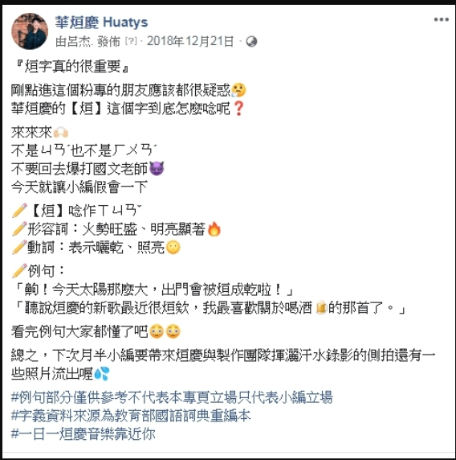
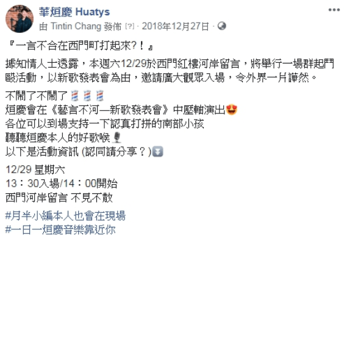
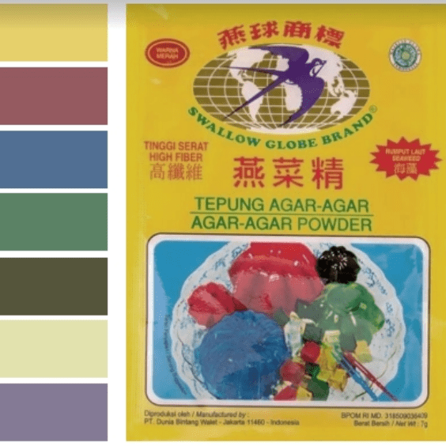

因課程需求，要幫助各組歌手製作一張專輯，我負責粉專名稱及hashtag發想、封面照片、發文風格定位。 這次當小編的經驗，讓我發現自己喜歡用文字來與人分享美好的事物！ 在我負責粉專期間，最高貼文觸及率為1.2K，有141人按讚，後來小編由他人接手，觸擊率低了２倍以上。
 
當時負責發表會前期的行政庶務處理，發表會當天則於前台接待及發送傳單。 意料之外的是，我說服一對外籍情侶入內看表演，那次經驗後便愈加用心進修英文，必要時就能多一項工具！
教授要求此企劃要找一名職人進行訪問，並依照訪問內容來製作成一張專輯。我們選上了住在學校附近，曾經獲得 模範媽媽的婦女「阿琴」。我在此專案擔任企劃發想以及實際訪談執行的工作，而訪談當天並沒有照本宣科問完事 先準備的問題，因為有掌握訪問方向，反而蒐集到更多資料來當作製作專輯的素材。這個經驗使我意外發現，無論在執行哪一種專案， 都不能太拘泥於細節，應該依照整體核心概念去走。
